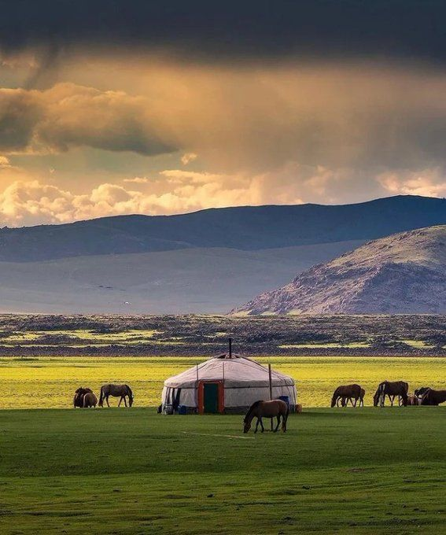
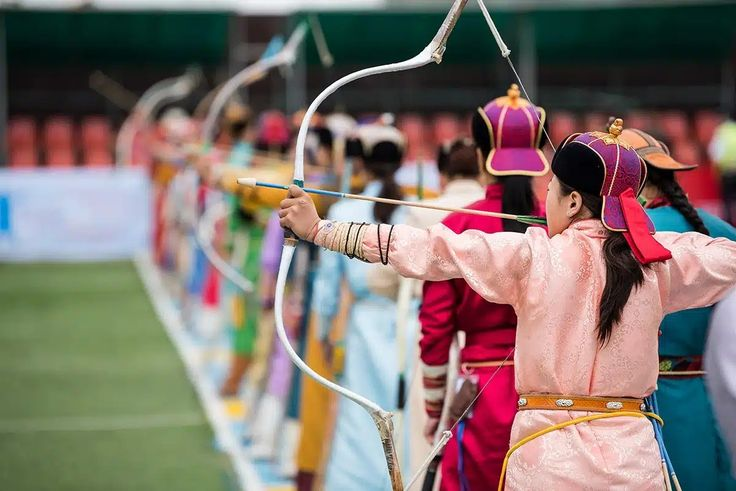

Top Attractions
Culture & Traditions
the nomadic way of life(Vita nomadica in Mongolia)
Il primo incontro con la Mongolia e la cultura nomadica è stato all’alba, appena dopo l’atterraggio, esplorando l’informale periferia gher di Ulaanbaatar. “Gher” (гэр) è la parola che indica le tradizionali iurta (yurt) della Mongolia, tradizionalmente progettate per essere smontate e trasportate in base ai cambiamenti stagionali e alla vita nomade. Nelle steppe mongole non si è mai adottato l’uso di stalle: piuttosto che modificare le abitudini degli animali, l’uomo ha preferito adattarsi alle loro esigenze seguendoli nelle migrazioni stagionali.
traditional yurts(yurte tradizionali)
Una yurta (dal turco) o ger (mongolo) è una tenda circolare portatile, coperta e isolata con pelli o feltro, tradizionalmente utilizzata come abitazione da diversi gruppi nomadi nelle steppe e nelle montagne dell'Asia interna.[1] La struttura è costituita da un assemblaggio flessibile ad angolo o da un reticolo di legno o bambù per le pareti, un telaio della porta, costole (pali, travi) e una ruota (corona, anello di compressione) eventualmente piegata a vapore come tetto. La struttura del tetto è talvolta autoportante, ma le yurte di grandi dimensioni possono avere pali o colonne interne che sostengono la corona. La sommità della parete delle yurte autoportanti è impedita dall'espansione per mezzo di una fascia di tensione che si oppone alla forza delle costole del tetto. Le yurte richiedono dai 30 minuti alle tre ore per essere montate o smontate e sono generalmente utilizzate da un numero di persone compreso tra cinque e quindici. L'agricoltura nomade con le yurte come abitazioni è stata il principale stile di vita in Asia centrale, in particolare in Mongolia, per migliaia di anni. Le yurte moderne possono essere costruite in modo permanente su una piattaforma di legno o cemento; possono utilizzare materiali moderni come strutture metalliche, plastica, cupole in plexiglass o isolamento radiante.

Mongolia’s unique music and festivals
Il Naadam è una festa tradizionale celebrata in Mongolia, Mongolia Interna e Tuva. La festa è anche chiamata localmente "eriin gurvan naadam", "i tre giochi degli uomini". I giochi sono la lotta mongola, le corse di cavalli e il tiro con l'arco e si svolgono in tutto il paese durante il periodo di mezza estate.
Date: 10 e 11 luglio 2025. Dove: centro città e provincia. Festival del Naadam Data: 11 e 12 luglio 2025. Dove: Ulan Bator Data: 2 e 3 agosto 2025. Dove: Khui Doloon Hudag vicino a Ulan Bator Il Festival del Naadam è il festival più famoso e la più grande festa nazionale della Mongolia. Permette ai viaggiatori di socializzare con i mongoli e osservare l'autentica cultura tradizionale. Il Naadam non è un evento turistico, ma una festa che i mongoli celebrano gareggiando e praticando sport e giochi tradizionali. I visitatori del nostro sito web e i lettori che intendono partecipare al Festival del Naadam riceveranno le informazioni e i consigli più esperienziali su come godersi e comprendere il festival, come rendere la propria vacanza interessante, ricca di esperienze e attività uniche e come festeggiare insieme ai mongoli. Organizziamo tour che includono il principale festival del Naadam di Ulan Bator e un festival del Naadam locale nella Mongolia settentrionale, presso lo splendido lago Khuvsgul. L'origine della festa del Naadam è antichissima. "Naadam" significa festa o festa dello sport. Pertanto, è corretto dire "Naadam" invece di "Festa del Naadam"..
Food & Drink
Try local dishes like buuz, khuushuur, and the famous fermented mare’s milk, airag.
Il buuz è la versione mongola dei ravioli al vapore, comunemente diffusi in tutta la regione. Etimologicamente, rivela la sua origine cinese, poiché baozi (cinese: 包子; pinyin: bāoziⓘ) è la parola cinese per indicare i ravioli al vapore. Vengono consumati in grandi quantità durante tutto l'anno, ma soprattutto durante le celebrazioni del Capodanno mongolo, che di solito cadono a febbraio. I buuz vengono preparati nelle settimane precedenti e lasciati congelare all'esterno; vengono consumati con insalate e pane fritto, accompagnati da suutei tsai (tè mongolo) e vodka.[2] L'insala niselel (mongolo: Нийслэлийн салат), una variante dell'insalata di patate Olivier, è particolarmente popolare, essendo quasi onnipresente nei banchetti e nei pasti formali delle famiglie mongole.[citazione necessaria]
Plan Your Trip
Get travel tips, visa information, and the best times to visit Mongolia.